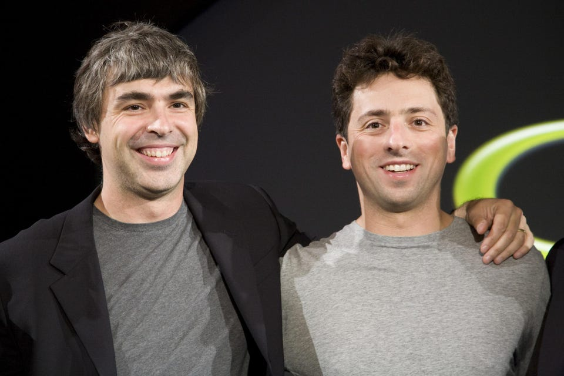
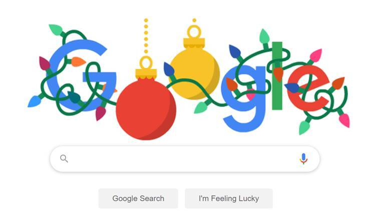

Google je ameriško podjetje, ustanovljeno leta 1998, njegova najbolj znana izdelka sta spletni iskalnik Google in spletni brskalnik Google Chrome ter operativni sistem Android. Poleg tega pa razvija tudi druge storitve in izdelke, kot so Google Sites, Google Analitics, Google Maps, Gmail, G Suite, spletni prevajalnik Google Translate, Google Play Store in YouTube.
Google se je začel januarja 1996 kot raziskovalni projekt Larryja Pagea in Sergeya Brina, ko sta bila oba doktorska študenta na univerzi Stanford v Kaliforniji. Page in Brin sta nov iskalnik prvotno poimenovala "BackRub". Kasneje sta spremenila ime v Google; ime iskalnika je bila igra besede googol, zelo veliko število, napisano 10100 (1, ki mu sledi 100 ničel), izbrano tako, da pomeni, da je bil iskalnik namenjen zagotavljanju velikih količin informacij. Domena www.google.com je bila registrirana 15. septembra 1997, podjetje pa je bilo uradno ustanovljeno 7. septembra 1998. Prva investitorja Googla sta bila David Cheriton in Andy Bechtolsheim, ki sta s finansiranji začela avgusta leta 1998. Kasneje je Google dobil še druge investicije s strani Amazona od Jeffa Bezosa in podjetnika Rama Shrirama, ki je bil v stiku z Bezosom glede investicij v mlado podjetje Google. S pridobljenimi sredstvi sta Page in Brin odprla prvi googlov urad v Menlo Parku v Kaliforniji.
Po nekaterih dodatnih, majhnih naložbah od konca leta 1998 do začetka leta 1999 je bil 7. junija 1999 objavljen nov krog financiranja v višini 25 milijonov dolarjev, z glavnimi vlagatelji: podjetji tveganega kapitala Kleiner Perkins in Sequoia Capital. Obe podjetji sta bili sprva zadržani glede skupnega vlaganja v Google, saj sta vsaka želela obdržati večji odstotek nadzora nad podjetjem zase. Larry in Sergey pa sta vztrajala pri prevzemu naložb od obeh. Obe podjetji sta se končno strinjali, da bosta skupaj vložili 12,5 milijona dolarjev, vsaka zaradi svojega prepričanja v Googlov velik potencial in s posredovanjem prejšnjih vlagateljev Rona Conwaya in Rama Shrirama, ki sta imela stike v teh podjetjih.
Dandanes Google ponuja mnogo storitev kot na primer:
| Vrsta storitve: | Ime storitve: |
|---|---|
| 1) Spletni iskalnik | |
| 2) Spletni brskalnik | Google Chrome |
| 3) Email-spletna pošta | Gmail |
| 4) Shranjevanje in deljenje slik | Google Photos |
| 5) Povzemanje novic na spletu | Google News |
| 6) Operativni sistem | Android |
| 7) Analiza podatkov | Google Analytics |
| 8) Oglaševanje | Google Ads |
| 9) Upravljanje časa in načrtovanje | Google Calendar |
| 10) Zemljevidi, navigacija in satelitski posnetki | Google Maps |
| 11) Shranjevanje datotek | Google Drive |
| 12) Storitve za pisanje, predstavitve in preglednice | Google Docs, Slides in Sheets |
| 13) Pisanje zapiskov | Google Keep |
| 14) Prevajanje | Google Translate |
| 15) Storitve za učenje | Google Classroom |
| 16) Video-srečanja | Google Meet |
| 17) Deljenje in gledanje posnetkov | YouTube |
| 18) Video igre | Stadia |
| 19) Ogled satelitskih slik | Google Earth |
| 20) Pomoč pri upravljanju doma | Google Home |
| 21) Deljenje vsebin iz telefonov na televizorje | Chromecast |
Googlov logotip je bil ustvarjen direktno od Sergeja Brina in se je v času začasno spreminjal glede na praznike, dogodke, dosežke in ljudi. Ta tradicija se je poimenovala Google Doodle. Od leta 2000 naprej Doodles na Googlu so osnovani in narisani od za to pristojnih uslužbencev imenovani "Doodlers".
Na seznamu najboljših podjetij za katere delati od revije Fortune je bil Google v letih 2007, 2008 in 2012 na prvem mestu ter v letih 2009 in 2010 na četrtem mestu. Googlova korporativna filozofija vključuje načela, kot so "lahko zaslužiš denar, ne da bi delal zlo", "lahko si resen brez tudi elegantne obleke" in "delo mora biti izziv in izziv mora biti zabava." Google je dan danes del podjetja Alphabet Inc., ki je glavni delničar podjetja Google.Od 30. septembra 2020 je imela Alphabet Inc. 132.121 zaposlenih, od tega jih je več kot 100.000 delalo za Google. Googlovo poročilo o raznolikosti za leto 2020 navaja, da je 32 odstotkov njegove delovne sile žensk in 68 odstotkov moških, pri čemer je etnična pripadnost delovne sile pretežno bela (51,7 %) in azijska (41,9 %). V tehnoloških vlogah je bilo 23,6 odstotka žensk; in 26,7 odstotka vodilnih vlog so imele ženske. Poleg svojih 100.000+ redno zaposlenih je Google od marca 2019 zaposlil približno 121.000 začasnih delavcev in pogodbenikov.
Google je znan tudi zaradi njegovih ogromnih in modernih uradov v Kaliforniji, ki so postali sinonim ugodnega delovnega mesta, ki spodbuja kreativnost zaposlenih, da bi tako imeli čim boljši odnos do dela. Tukaj spodaj posnetek, ki podrobneje prikazuje Googlove urade:
O Googlu so tudi posneli film imenovan The Internship v katerem igrata v vlogah glavnih junakov Vince Vaughn in Owen Wilson. Ta pripoveduje zgodbo dveh gospodov v srednjih letih, ki izgubita delo in se zaposlita kot pratikanta pri Googlu kjer se naučita mnogo stvari o tehnologiji in o delovanju Googla.
Katero Googlovo storitev uporabljaš največ?
Za izbrati element klikni da dropdown: